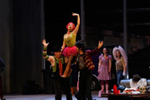
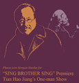
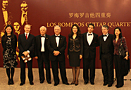
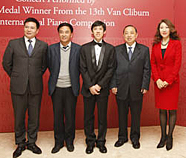
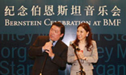
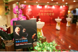
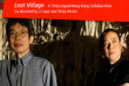
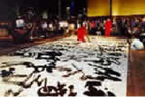

摩根士丹利赞助2014年北京国际音乐节情定孤岛——理查• 施特劳斯独幕歌剧《阿里阿德涅在拿索斯岛》
摩根士丹利于10月20日为第十七届北京国际音乐节之情定孤岛——理查• 施特劳斯独幕歌剧《阿里阿德涅在拿索斯岛》提供赞助，这已是摩根士丹利连续第八年赞助此音乐盛事。本次音乐节也是这部问世百年的理查• 施特劳斯经典剧目在中国的首演。德国指挥家马提亚斯• 福曼尼率领中国爱乐乐团与来自莱比锡歌剧院的优秀歌唱家们一道，为中国歌剧舞台揭开新的一页，把以纪念施特劳斯诞辰150周年为主题的本届音乐节推向高潮。
摩根士丹利赞助2013年北京国际音乐节“重想”瓦格纳—爵士钢琴家尤瑞 • 肯恩及爵士六人组专场音乐会
摩根士丹利于10月13日为第十六届北京国际音乐节之“重想”瓦格纳—爵士钢琴家尤瑞 • 肯恩及爵士六人组专场音乐会的演出提供赞助。在2013年的第十六届北京国际音乐节期间，爵士钢琴家尤瑞 • 肯恩带给本届北京国际音乐节非比寻常的瓦格纳献礼音乐会。两年前，肯恩曾成功演绎爵士版的马勒作品，此次他与天狼星四重奏成员、手风琴家特德 • 赖希曼一起合作，吸取瓦格纳的管弦乐织体、无尽的旋律和复杂的和声的精华，将它们冶于一炉并创新打造的爵士版瓦格纳。
摩根士丹利赞助2012年北京国际音乐节“重返未来—美国巨星迈克尔 • 波顿”音乐会
摩根士丹利于11月1日在十五届北京国际音乐节期间为“重返未来—美国巨星迈克尔 • 波顿”音乐会演出提供赞助。
对艺术的支持一直是摩根士丹利全球公益事业的重点之一。我们深信分享艺术体验能够增进文化的融通。我们希望通过对北京国际音乐节积极与不懈的支持，将更多国际一流的艺术表演带给中国观众。今年，我们为大家带来的是美国巨星迈克尔 • 波顿的“重返未来”音乐会。该场表演汇集了《灵魂主宰》、《祈祷》等迈克尔 • 顿的众多经典歌曲。作为美国流行乐坛的传奇歌手，迈克尔 • 波顿自上世纪80年代便以其富有深情的歌声打动了全球听众。他曾多次获得格莱美音乐奖，并拥有全球专辑及单曲销量超过5300万张的佳绩。作为社会活动家及慈善人士，迈克尔 • 波顿以人文关怀为主题进行歌曲创作，并成立了自己的基金会“迈克尔 • 波顿慈善基金”，致力于消除美国妇女和儿童所面对的暴力侵害。听众可以从音乐会所选曲目当中真切感受到他对人的关怀与同情之心。
摩根士丹利赞助“田浩江个人舞台剧《我歌我哥》全球首演”
摩根士丹利于2012年5月25日在第十二届“相约北京”联欢活动间为“田浩江个人舞台剧《我歌我哥》全球首演”提供赞助。
摩根士丹利为大家带来的是田浩江先生的个人舞台剧《我歌我哥》，田浩江先生的艺术生涯具有传奇色彩，是当今举世公认的最具才华的男低音歌唱家之一，这次5月25日田浩江先生在国家大剧院演出的舞台剧《我歌我哥》是全球首次演出。这部由田浩江先生创作并出演的剧目将叙事性的话剧和歌唱巧妙结合，无疑是此次演出中的一个亮点。
摩根士丹利赞助2011年北京国际音乐节“神奇的号角-安妮·苏菲·冯·奥特艺术歌曲独唱音乐会”
摩根士丹利于2011年10月27日在十四届北京国际音乐节期间为“神奇的号角-安妮·苏菲·冯·奥特艺术歌曲独唱音乐会”的演出提供赞助。
今年，摩根士丹利为大家带来的是“神奇的号角-安妮·冯·奥特艺术歌曲独唱音乐会”，其中包括马勒根据德国民谣改编的一系列歌曲。表演者安妮·冯·奥特被认为是当代最受欢迎的女中音歌唱家，这次演出也是安妮·冯·奥特在中国的首次演出，各位喜爱马勒作品的听众一定能通过她的演绎充分享受这场音乐会。此次演出的另一个看点是安妮·冯·奥特与瑞典钢琴家赫特·福尔斯伯格的携手合作。艺术歌曲的演绎需要独唱与伴奏之间长期的磨合才能达到最终默契，而这两位艺术家对艺术歌曲的演绎都有很深的造诣，其合作正可谓是祝珠联璧合。
摩根士丹利赞助2010年北京国际音乐节“罗梅罗吉他四重奏”音乐会
摩根士丹利于2010年10月26日在十三届北京国际音乐节期间为“罗梅罗吉他四重奏”音乐会的演出提供赞助。我们向北京音乐节的艺术成就致敬，并为我们连续四年能为这一盛事提供支持感到荣幸。
对艺术的支持一直是摩根士丹利全球公益事业的重点，我们相信分享艺术将会增进文化交流和融通。我们希望通过对北京国际音乐节积极与不懈的支持，将更多国际一流的艺术表演和音乐体验带给中国观众。
“罗梅罗”即为这种体验中的精品。三代同台并享有“吉他皇室家族”美誉的罗梅罗吉他四重奏自创立以来享誉世界古典乐坛四十余年。罗梅罗吉他四重奏此次为听众呈现著名作曲家罗德里戈(Joaquín Rodrigo) 和比才(Georges Bizet) 的作品。
摩根士丹利中国区首席执行官孙玮在音乐会前的酒会上一起欢迎60余位摩根士丹利的嘉宾客人。孙玮表示，“作为一家拥有75周年卓越历史的全球金融服务机构，我们相信罗梅罗音乐世家的历史积淀也充分彰显了摩根士丹利的悠久历史。”
演出获得热烈好评，演奏家应观众要求表演了三次谢幕演奏，观众们长时间起立鼓掌并久久不愿离席。
摩根士丹利赞助北京国际音乐节“新秀初绽”音乐会
摩根士丹利日前赞助了中国顶尖古典音乐盛事——第十二届北京国际音乐节的一场标志性音乐会“新秀初绽”，这是摩根士丹利连续第三年赞助该音乐节。
在2009年10月19日的演出中，天才音乐家张昊辰演奏了肖邦、李斯特和普罗科菲耶夫的作品，北京交响乐团倾情伴奏。这位年仅19岁的中国神童是范•克莱本国际钢琴比赛新晋的金奖得主。
摩根士丹利中国区首席执行官孙玮和北京国际音乐节创始人/艺术总监余隆在音乐会前的酒会上一起欢迎百余位摩根士丹利的嘉宾客人。
“作为一家长期为青年艺术事业和教育发展提供机会和支持的国际金融机构，摩根士丹利深信，在艺术领域有独特天赋的年轻人应当得到鼓舞、激励和重视。”孙玮表示，“张昊辰无疑就是这样一位杰出新秀。”
这位年轻钢琴家当日为观众献演了一场热情洋溢的音乐会，赢得了观众的热烈反响。
摩根士丹利赞助北京音乐节“纪念伯恩斯坦音乐会”
2008年是摩根士丹利赞助中国顶级古典音乐盛事——第11届北京国际音乐节的第二年。中国爱乐乐团在10月11日为“纪念伯恩斯坦音乐会”举办了专场演奏会。演出曲目均为美国当代著名作曲家、指挥家伯恩斯坦晚期的音乐剧作品，并由伯恩斯坦的女儿吉米•伯恩斯坦担任讲解。
摩根士丹利中国区首席执行官孙玮和北京国际音乐节创始人/艺术总监余隆在音乐会后一起欢迎百余位摩根士丹利的嘉宾客人。
“我们相信通过举办文化、教育这样的慈善活动，可以增进世界文化的沟通和理解”孙玮说，“这场音乐会就是文化交流的最好例证。”
一部以北京国际音乐节和伯恩斯坦为素材的片花也将于美国东部时间10月21日晚7点在纽约时代广场大屏幕亮相。
摩根士丹利赞助2007年第十届北京音乐节
摩根士丹利赞助了今年第十届北京音乐节。作为亚洲最重要的文化盛会之一，本次北京音乐节历时一个月，其间上演了一系列精彩的节目。摩根士丹利为其中的《谭盾和Penderecki：东西方的对话》音乐会提供了特别赞助。
谭盾凭借影片《卧虎藏龙》中的配乐获得过第73届奥斯卡最佳配乐奖，并且以声音运用上的创新而闻名，他在音乐会上指挥演奏了自己的作品《秘密土地》；而以先锋音乐语言闻名的波兰音乐家Krzysztof Penderecki则完成了他《第八交响曲》的中国首演。
 除了本次音乐会之外，公司还与音乐会联合赞助人之一、中国顶级商业刊物《财经》杂志共同举办了一场鸡尾酒会，这次合作也凸显了本次音乐会东西方对话的主题。摩根士丹利与《财经》杂志的客户和双方的管理层一同出席了这次酒会。
“作为一个全球性的艺术和教育支持者，我们相信超越商业和政治的东西方对话，对于加强世界对东方，特别是中国的文化和传统的了解非常重要，”摩根士丹利中国首席执行官孙玮在她的祝词中说到，“不论在中国或者国外，只有通过对话和了解，我们才能一起和互相为对方创造和谐与机遇。”
北京音乐节获中国文化部和北京市政府的支持。在过去的10年里，音乐节吸引了来自世界各地的艺术家和观众，包括“世界三大男高音”之一的卡雷拉斯以及马友友。
摩根士丹利赞助香港艺术节《下周村》首演
香港艺术节是亚洲历史最悠久和最受瞩目的年度艺术活动之一。连续八年，摩根士丹利是香港艺术节的赞助人。今年公司再次尝试支持创自亚洲地区的新制作，一出意念全新、由中日两国著名戏剧艺术家携手呈献的《下周村》。
《下周村》是2007年香港艺术节世界首演剧目，由北京中国国家话剧院和日本东京新国立剧场合作编制。故事以中国某偏远的农村为背景，一个突然出土的历史遗址引来了两国各式人物的到来、迷思与期盼。编剧及导演通过无国界戏剧语言，以当代的视野，剖视中国与日本的文化历史纠结。
继三月在香港的成功演出后，《下周村》将移师北京和东京继续公演。
摩根士丹利赞助2005年香港艺术节《琥珀》全球首演
一如既往，公司已连续6年支持亚洲的重要文化活动之一 - 香港艺术节。每年摩根士丹利都会在艺术节期间，选择赞助一位艺术家或剧目演出，他们都无一例外地反映了公司的核心品牌价值 - 有着无限创意、团队精神、勇于革新、并且追求卓越。今年亦是如此 - 《琥珀》，一出新派原创的舞台音乐话剧，是由中国剧坛最具影响力的导演孟京辉执导，中国国家话剧院倾力演出，并由金马影帝刘烨和著名女演员袁泉领衔主演。
《琥珀》是一个以当代中国为背景的寓言故事，它剖视了关于爱与欺骗、品格与私心的人性冲突。导演孟京辉独创的 “音乐舞台”风格和演员们精湛的演绎，打造了一部跨越文化界限，集世界级话剧、多媒体舞台表演和流行音乐于一身的杰作。该剧于2005年3月3日在香港作全球首演，首场演出由本公司赞助。《琥珀》在香港共演出六场，是本年度艺术节最卖座的剧目之一。3月3日至8日在香港首演后，《琥珀》移师上海、北京和新加坡继续巡回演出。
摩根士丹利赞助2004年香港艺术节
作为全球艺术活动的支持者和香港艺术节的经常赞助人，摩根士丹利在快将举行的一年一度香港艺术节，将赞助由蜚声国际的现代舞蹈团西班牙国家舞蹈团于明年3月3日之演出 --《巴赫叙/静寂与空虚》。选用著名音乐家巴赫的多段不同格调乐曲创作而成的《巴赫叙/静寂与空虚》，是当今舞坛极受推崇的编舞家纳曹•杜亚陶(Nacho Duato) 的又一精心杰作。
香港亚洲青年音乐家大赛
在2000至2001年期间，摩根士丹利与香港电台及康乐及文化事务署携手合办「香港亚洲青年音乐家大赛」。它是区内首个旨在提供机会给青年演奏者向国际舞台迈出第一步的古典音乐比赛。从几百位来自亚太区不同国家的年轻音乐精英中选出二十位参加准决赛，然后再选出四位参与决赛。四位能够跻身决赛的包括：女高音郭森(中国)、小提琴手乐薇薇(中国)、手风琴手阮氏琼庄(越南) 和大提琴手朱琳(中国)。经过先后在2001年9月份举行的独唱／独奏会和精彩无比的协奏曲决赛，以马连拿爵士 (Sir Neville Marriner) 为首的国际评判团最后选出冠军得主为来自越南的手风琴手阮氏琼庄。
香港艺术节
作为推广世界各地艺术的积极支持者，摩根士丹利已连续几年赞助一年一度的香港艺术节表演。在2001年，我们赞助传奇苏联芭蕾舞星巴瑞辛尼可夫(Mikhail Baryshnikov)及其白橡树舞集(White Oak Dance Project) 从美国来港演出。在2002年，我们赞助由普罗科菲耶夫(Prokofiev) 改编、苏联布尔什歌剧团(Bolshoi Theatre) 主演的著名歌剧“三个橙子的爱情”(The Love for Three Oranges) 在港演出。
“Inside Out” - 新中国艺术
“Inside Out”为最全面展示当代中国艺术的一个大型展览。展品为美国三藩市现代艺术博物馆收藏品，当中除了由来自大中华地区和旅居西方华人艺术家所创作的两度空间艺术品外，还包括不少艺术装置和多媒体艺术作品。由美国亚洲协会(Asia Society)推荐、摩根士丹利赞助，“Inside Out”在2000年9月于香港艺术馆展出超过两个月。
中国交响乐团与摩根士丹利合办“华韵” 音乐会
在1999年，中国交响乐团与摩根士丹利携手合作，为中国交响乐原创作乐曲发展写下新的一页。我们组织和赞助在国内举办青年古典音乐作曲家徵曲大赛，比赛反应热烈。经过一轮激烈的竞争，一辑独一无二的精选的原创作品“华韵”宣布诞生，并交由中国交响乐团在音乐会上演奏。中国交响乐团于2000年度香港艺术节表演中也有演奏其中的一些作品。